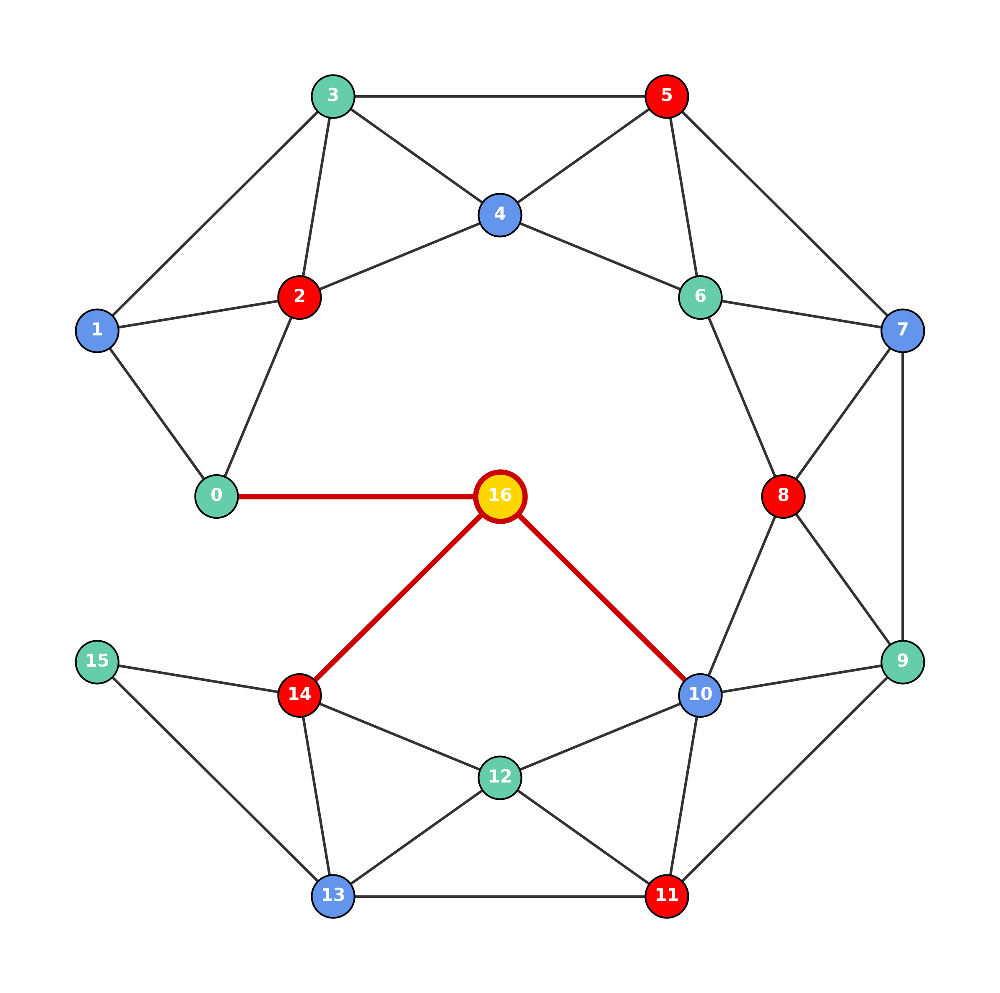
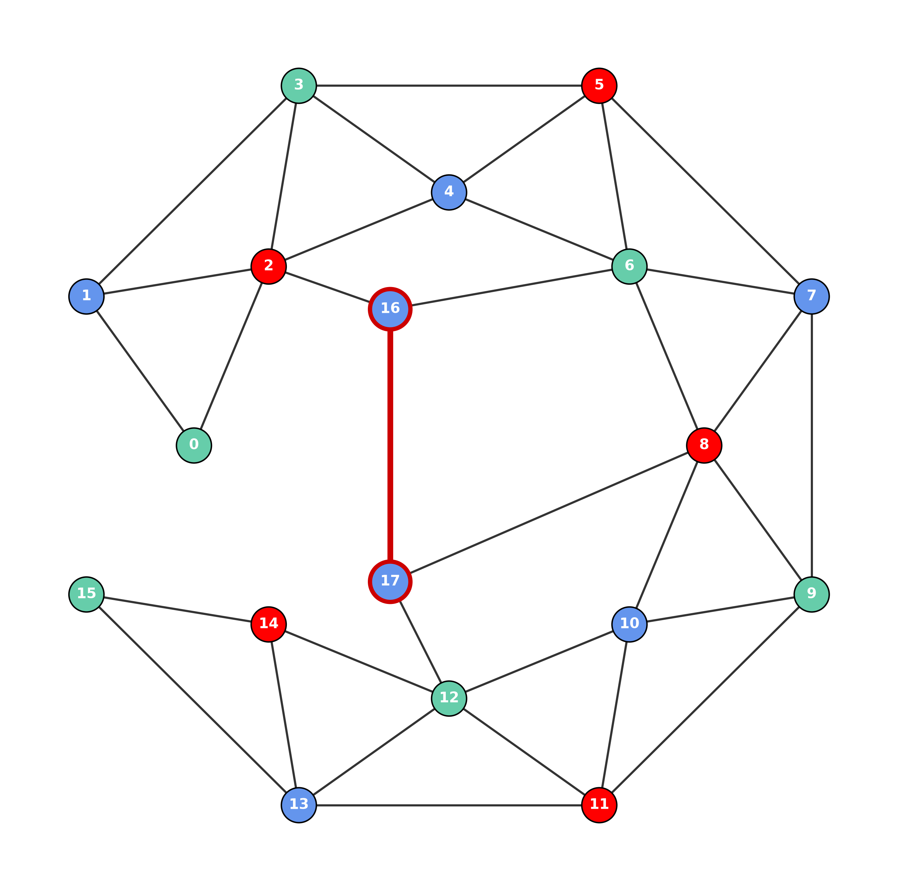

На главной странице контрпримера показан замкнутый случай: цепочка вынужденности замыкается и требует четвёртого цвета. Но это не единственный тип структуры. Ниже — ещё два примера, показывающих, что глобальная вынужденность может возникать и без замыкания цепочки.
Цепочка из 16 вершин не замкнута — рёбра 0–14, 0–15, 1–15 удалены. Сама по себе она 3-раскрашиваема. Но внешняя вершина 16 соединена с тремя её вершинами — 0, 14, 10, которые имеют разные цвета. Значит, 16 вынуждена получить четвёртый цвет.

Здесь уже две внешние вершины: 16 соединена с 2 и 6, 17 соединена с 8 и 12. Обе вынуждены получить синий цвет. Но между ними есть ребро 16–17 — значит, они не могут иметь одинаковый цвет. Возникает конфликт между двумя внешними вершинами.

| Пример | Цепочка | Источник 4-го цвета | Конфликт |
|---|---|---|---|
| 1 (19 вершин) | замкнута | внутри цепочки | замыкание |
| 2 (17 вершин) | не замкнута | одна внешняя вершина | локальный у вершины |
| 3 (18 вершин) | не замкнута | пара внешних вершин | между двумя вершинами |
Пример 3 показывает: вынужденность может распространяться за пределы цепочки и создавать конфликты между внешними вершинами. Это уже не сводится ни к какому конечному списку локальных конфигураций.
Локальный поиск видит вершину 16 — она соединена с 2 и 6, обе разрешают синий. Всё нормально. Локальный поиск видит вершину 17 — она соединена с 8 и 12, обе разрешают синий. Всё нормально. Локальный поиск видит ребро 16–17 — оно требует разных цветов. Но какие цвета у 16 и 17 — не локальная информация.
Чтобы понять, что обе вынуждены к синему, нужно знать цвета всей цепочки. А это \(O(n)\) шагов. Если таких пар внешних вершин \(m\) — то \(O(n \cdot m)\).
Теорема о четырёх красках, скорее всего, верна. Но её классическое доказательство опирается на локальный поиск структур. Эти примеры показывают, что глобальная вынужденность может возникать вне цепочки — и тогда локальный поиск её не видит.
Конструктивное доказательство, представленное на этом сайте, предлагает альтернативу: явный алгоритм, который работает с любой цепочкой вынужденности — замкнутой или незамкнутой, — и с любыми внешними связями.
Полный текст доказательства доступен в препринте на Zenodo:
📄 Читать полную статью (PDF, Zenodo)The main counterexample page shows the closed case: a forced chain closes and requires a fourth color. But this is not the only type of structure. Below are two more examples showing that global forcedness can arise without closing the chain.
A chain of 16 vertices is open — edges 0–14, 0–15, 1–15 are removed. On its own, it is 3-colorable. But the external vertex 16 is connected to three of its vertices — 0, 14, 10 — which have different colors. Therefore, 16 is forced to take a fourth color.
Here there are two external vertices: 16 is connected to 2 and 6, 17 is connected to 8 and 12. Both are forced to take blue. But there is an edge 16–17 — so they cannot have the same color. A conflict between two external vertices arises.
| Example | Chain | Source of 4th color | Conflict |
|---|---|---|---|
| 1 (19 vertices) | closed | inside the chain | closure |
| 2 (17 vertices) | open | one external vertex | local at the vertex |
| 3 (18 vertices) | open | a pair of external vertices | between two vertices |
Example 3 shows: forcedness can spread beyond the chain and create conflicts between external vertices. This does not reduce to any finite list of local configurations.
Local search sees vertex 16 — it is connected to 2 and 6, both allow blue. All normal. Local search sees vertex 17 — it is connected to 8 and 12, both allow blue. All normal. Local search sees edge 16–17 — it requires different colors. But what colors 16 and 17 have — is not local information.
To understand that both are forced to blue, one needs to know the colors of the entire chain. That is \(O(n)\) steps. If there are \(m\) such pairs of external vertices — then \(O(n \cdot m)\).
The Four Color Theorem is most likely true. But its classical proof relies on local search for structures. These examples show that global forcedness can arise outside the chain — and then local search does not see it.
The constructive proof presented on this site offers an alternative: an explicit algorithm that works with any forced chain — closed or open — and with any external connections.
The full proof is available in the preprint on Zenodo:
📄 Read the full paper (PDF, Zenodo)